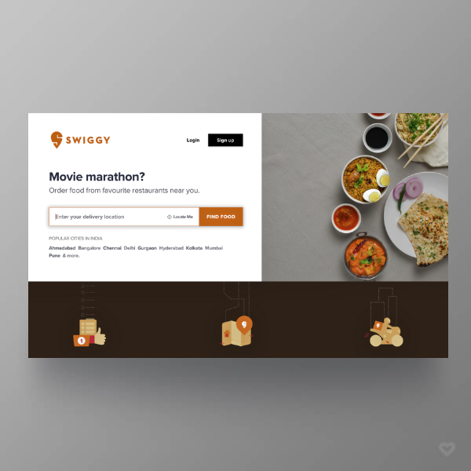
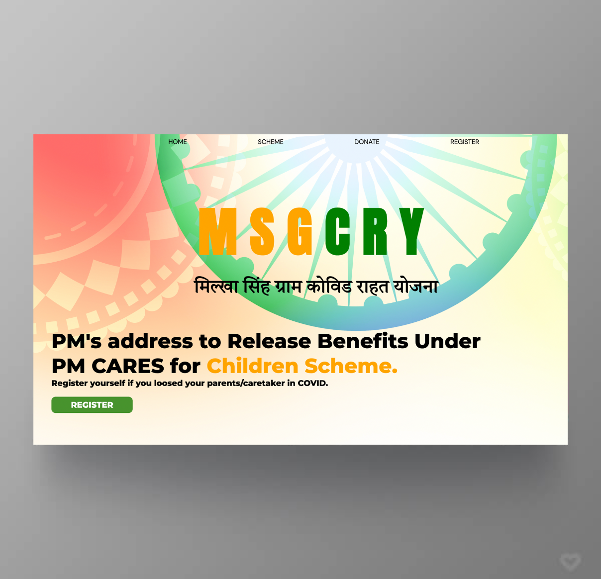
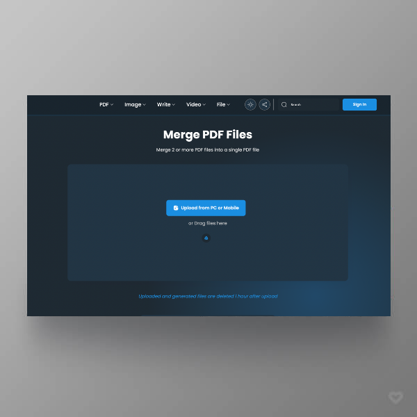

Hi, I’m Manu Chaitanya. I'm a multi-talented human with two years of experience in wide range of Development and Programming. Dedicated to staying abreast of the latest developments in Data Structures and Algorithms, constantly seeking opportunities for professional growth.
During my College Days at Bennett University spanning Four Semesters, I dedicated a significant portion of my academic focus to the comprehensive study of Data Structures and Algorithms, encompassing fundamental principles and advanced methodologies. Over a period of two years, I demonstrated adeptness in both Front-End and Back-End Development, evidencing my proficiency through the successful completion of a diverse portfolio comprising more than a dozen projects.
I cultivated a strong foundation in Java Programming, concentrating intently on a course encountered during my First Semester. I successfully mastered the tenets of programming, encompassing Introduction to Java, Variables, Data Types, Conditional Statements, Methods, Recursion, Strings, and Arrays. Simultaneously, I engaged in the resolution of facile Leetcode Questions pertaining to these thematic domains.
Object-Oriented Programming
I delved profoundly into the intricacies of Java programming, navigating the vast landscape of Object-Oriented Programming with a discerning acumen in my Second Semester. I proficiently traversed through Objects and Classes, Principles of OOP's, Exception Handling, Generics, Collection Framework and a myriad of other intricacies. In tandem, I applied my knowledge by resolving cognitively demanding GeeksforGeeks Questions.
Data Structures and Algorithms
After the initial phase of crafting Less Optimized Code, I redirected my efforts towards mastering Data Structures in Java in Third Semester. My comprehensive journey encompassed a thorough exploration of Foundational Structures such as Strings, Arrays, Linked Lists, Hashmaps, Stacks and Queues progressing seamlessly to Advanced constructs like Trees and Graphs along with Leetcode Easy Questions.
Problem Solving
After completing LeetCode and GFG Easy-Level Questions, I elevated my programming prowess by immersing myself in the intricacies of Medium-Level Challenges and Competitive Programming in Fourth Semester. My strategic focus extended to the implementation of renowned algorithms like Binary Search, Sorting Algorithms, Sliding Window, Greedy Algorithms, Backtracking and Dynamic Programming."
Front-End Development
I embarked on my Front-End journey in Second Semester by mastering the basics, laying a solid foundation for Web Development. This initial phase included acquiring skills in HTML, CSS, and JS setting the stage for a comprehensive exploration of Front-End Technologies and design principles. I undertook the development of five foundational Front-End Projects.
Back-End Development
I initiated my exploration into Back-End Development by mastering foundational concepts in Third Semester. This journey involved gaining a understanding of Server-Side Technologies, Databases and Server Management. Acquiring proficiency in languages like PHP and MySQL. In pursuit of a deeper comprehension, I undertook the development of five foundational Back-End Projects.
MERN
After completing the Basics of Development, I initiated with the MERN STACK(MongoDB, Express.js, React, Node.js), a versatile and powerful technology stack for building Full-Stack Web Applications in Fourth Semester. Starting with MongoDB for flexible NoSQL data storage, Express.js for robust backend development, React for dynamic and interactive user interfaces, and Node.js for scalable server-side execution.
Database Management System
I also focussed on some other Core Subjects. I embarked on the realm of Database Management Systems (DBMS) in my Second Semester. My journey involved understanding ER Diagram, Relational Algebra, Normalization, Transactions, Concurrency Control and more. Exploring various Database Models and Systems.
Microprocessor and Architectures
I embarked on an exploration of Microprocessor and it's Architectures in Second Semester, delving into the fundamental components that drive computational processes. Studying the Architectures, Instruction Set, Memory Addressing, I gained insights into the intricacies of data manipulation and control flow. My journey included understanding the role of Registers, ALU and Memory System and I/O in executing instructions.
Operating Systems
I commenced my exploration of Operating Systems in Third Semester, unraveling the intricate layers that Orchestrate Computer Functionality. Diving into core concepts like Process Scheduling, Memory Allocation and File Systems and Kernel. My studies extended to key topics such as Synchronisation, Virtual Memory, and Device Management. This foundational understanding of Operating Systems empowered me to navigate the complexities of System Architecture.
Juxtapose My
SKILLS
These percentages are not merely metrics, they encapsulate my unwavering commitment to mastery. Each percentage signifies hands-on experience, successful course implementations, and a relentless pursuit of excellence. As I bring these skills to the forefront, I am poised to contribute in real world, driving innovation and achieving remarkable outcomes.
I dedicated my efforts in Development for the creation of Foundational Front-End and Back-End Projects, each meticulously crafted to elevate my Development Skills. These endeavors not only demonstrate my proficiency in Web Design and User Interfaces but also underscore my command over Server-Side Technologies.

Swiggy-Clone
Front-End Development
My PortFolio
Front-End Development

MGSCRY
Front-End Development

Swift Merger
Front-End Development
Lensshub-Basics
Front-End Development
SQL Master
Back-End Development
Riddle Book
Back-End Development
iDiscuss
Back-End Development
Cine Pulse
Back-End Development
Lensshub-Advanced
Back-End Development
Recent Articles
MY BLOGS
Get Started With LinkedIn Posts.
Excited to share my latest achievements and insights! Grateful for the journey.
Navigating through potential solutions systematically, revising and backtracking as needed. Essential for algorithmic challenges requiring exhaustive search and optimization.